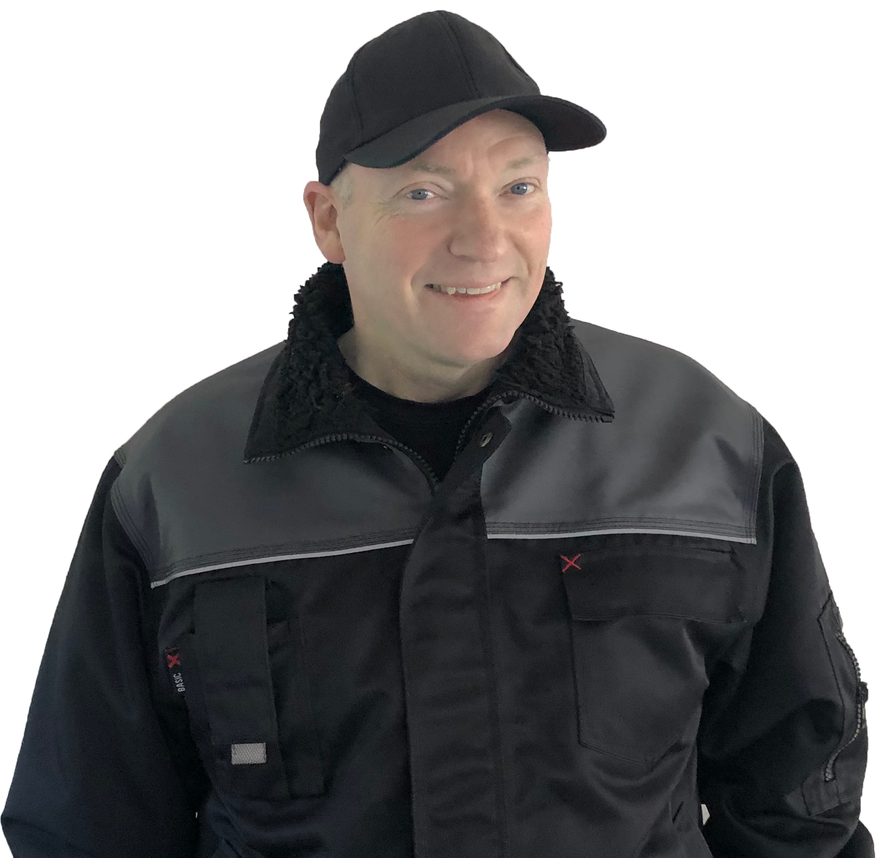

Stefan Pokorni
Hej mit navn er Stefan Zoltan Gullaksen Pokorni. Jeg har været i denne branche i 42 år og elsker mit job. Jeg er både ejer og stifter af Servicefabrikken, der før hen hed Z MULTI SERVICE V/STEFAN POKORNI. Servicefabrikken ligger i Hundested, men jeg har kunder forskellige steder i Nordsjælland og kører gerne ud til dem.
Hvis der er noget jeg kan gøre for dig, må du endelig kontakte mig.
Kontakt mig
